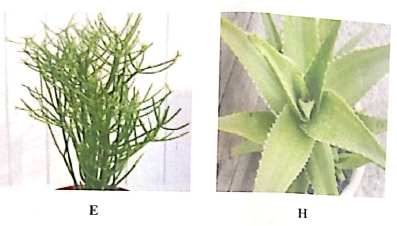

Biology
Paper 3 (2019)
- You are provided with specimens F and G, obtained from different
plant from different plant species. Observe them together with photographs E and H and answer
the questions that follow
Note: Do not destroy specimens F and G as you will need them for question 2

-
- State how plants represented by specimen F and photographs E and H protect
themselves.
Specimen F (1 mark)
...........................
...........................
Photograph E (1 mark)
.........................
.........................
Photograph H (1 mark)
.........................
......................... - State the likely habitat of each of the plants in (a) (i), giving a reason in each
case.
Specimen F (2 marks)
Habitat............
Reason............
Photograph E (2 marks)
Habitat.............
Reason.............
Photograph H (2 marks)
Habitat...............
Reason...............
- State how plants represented by specimen F and photographs E and H protect
themselves.
- Examine the leaves of specimen G.
- Describe two observable features of these leaves that help the plant conserve water. (2 marks)
- Besides leaf structure, explain two mechanisms that help the plant in (b) (i) above not to dry up during the dry season. (2 marks)
-
- You are provided with specimens labelled J and K in addition to F and G and photograph E and H (used
in question 1).
- Follow the dichotomous key below to identify E, F, G, H, J and K. I.
- (a) Leaf margin smooth............................ Go to 2
(b) Leaf margin serrated/rugged ................ Go to 3 - (a) Leal parallel-veined ..............................
K
(b) Leaf net-veined or veins not showing...... Go to 4 - (a) Leaf with thorny edges .........................
H
(b) Leaf edges not thorny ........................... Go to 5 - (a) Leaf large
............................................ G
(b) Leaf tiny ............................................... E - (a) Leaf on thorny stem
............................... F
(b) Leaf not on stem .................................... J
Fill the table below, indicating the steps used to identify the leaves of each specimen or photograph. (6 marks)
Leaf Steps followed E F G H J K - (a) Leaf margin smooth............................ Go to 2
-
- Besides Ical features found in the dichotomous key above, state two other features that can be used to identify leaves. (2 marks)
- State the complementary characteristics that define the leaf features stated in (b) (i). (2 marks)
- The habit of a plant in its environment is referred to as being a tree, shrub or herb,
depending on its height.
Suggest the habits of the plants from which specimen F and photograph H were obtained (2 marks)
- Follow the dichotomous key below to identify E, F, G, H, J and K. I.
- You are provided with specimens L and M which are types of teeth from the same mammal. Observe these
specimens together with photographs N and P and answer the questions that follow.
-
- With a reason in each case, name the type of tooth represented by specimens L and
M.
Specimen L (2 marks)
Name: ..............
Reason ...........
Specimen M (2 marks)
Name: ...............................
Reason ..... - Draw and label specimen L. (2 marks)
- State two functional differences between specimens L and M.
- With a reason in each case, name the type of tooth represented by specimens L and
M.
- State the diet of the mammals from which photographs N and P below were obtained, giving a
reason in each case.

- Photograph N (2 marks)
Diet .......
Reason ....... - Photograph P (2 marks)
Diet
Reason ...........
- Photograph N (2 marks)
-
- Name the joint labelled K on photograph P. (1 mark)
- Explain two features of the joint named in (c) (i) above that makes it adapt to its function (2 marks)
-
Confidential
- Besides other laboratory fittings and equipment, cach candidate will require the following:
- A twig with at least three leaves from a thorny lemon tree, labelled F
- A twig with at least three leaves from a mango tree, labelled G
- A Kale (Sukuma wiki) leaf, labelled J
- A portion of creeping grass with at least three leaves/leaf sheaths, labelled K
- One incisor tooth, labelled L
- One molar or premolar tooth, labelled M
Note: Collect all plant specimens a day before the examination
Specimens L and M should be obtained from the same mammal.
Marking Scheme
- You are provided with specimens F and G, obtained
from different plant from different plant species. Observe them together with photographs E and
H and answer the questions that follow
Note: Do not destroy specimens F and G as you will need them for question
-
- State how plants represented by specimen F and photographs E and H protect
themselves.
Specimen F (1 mark)- Has thorns/spines/prickles/needle-like structure that prick/injure/inhibit/harm/orevent herbivores/mammals/animals
- Shiny/glossy to reflect light to reduce water loss/transpiration
- Leaves fold to reduce transpiration/water loss rej. folding
alone
Photograph E (1 mark) - Plant normally produce a (white) unpleasant/poisonous/unpalatable fluid(latex, substance, mucilage, sap)
- Succulent(stem) to reduce water loss/transpiration/dehydration
- Has tiny/small/absence of leaves to reduce
transpiration
Photograph H (1 mark) - Plant has thorny/prickles/pricks/spines on leaves that prick herbivores/mammals/animals
- Produces unpleasant or poisonous or irritating or bitter or harmful or distasteful or unapalatable fluid
- State the likely habitat of each of the plants in (a) (i), giving a reason in each
case.
Specimen F (2 marks)
Habitat........Terrestial habitat with adequate/moderate/average rain/water availability/well-watered soils
Reason............Leaves fold to conserve water during drought/dry season; has medium/average sized leaves; glossy/shiny leaves to reflect away light hence reducing water loss
Photograph E (2 marks)
Habitat.............Arid/Semi-arid/dry land/desert/semi-desert habitat with inadequate water supply rej.dessert
Reason.............Thick/succulent/fleshy stem(that stores water/fluid/mucilage); leaves reduced in size/number/absence of leaves/tiny leaves rej. needle-like leaves
Photograph H (2 marks)
Habitat...............Arid/Semi-arid/dry land/desert/semi-desert
Reason...............Plant leaves are thick/succulent/fleshy (that stores water/fluid/mucilage); plant leaves with thick cuticle
- State how plants represented by specimen F and photographs E and H protect
themselves.
- Examine the leaves of specimen G.
- Describe two observable features of these leaves that help the plant
conserve water. (2 marks)
- Shiny/glossy leaf surface that reflect light reducing water loss/dehydration/dessication
- Thick/waxy cuticle to reduce (the rate of cuticular) transpired/water loss/dehydration/drying
- Besides leaf structure, explain two mechanisms that help the plant in (b) (i) above
not to dry up during the dry season. (2 marks)
- Has long tap rots/deep rooted/deep roots to reach more water down the surface.
-
Plant Shed leaves during drought I dry season (to recluce the surface area exposed for) transpiration
Accept - Leaf fall rej. Shedding of all the leaves.
- Describe two observable features of these leaves that help the plant
conserve water. (2 marks)
-
- You are provided with specimens labelled J and K in addition to F and G and photograph E and H (used
in question 1).
- Follow the dichotomous key below to identify E, F, G, H, J and K. I.
- (a) Leaf margin smooth............................ Go to 2
(b) Leaf margin serrated/rugged ................ Go to 3 - (a) Leal parallel-veined ..............................
K
(b) Leaf net-veined or veins not showing...... Go to 4 - (a) Leaf with thorny edges .........................
H
(b) Leaf edges not thorny ........................... Go to 5 - (a) Leaf large
............................................ G
(b) Leaf tiny ............................................... E - (a) Leaf on thorny stem
............................... F
(b) Leaf not on stem .................................... J
Fill the table below, indicating the steps used to identify the leaves of each specimen or photograph. (6 marks)
Leaf Steps followed E 1a, 2b, 4b; F 1b, 3b,5a; G 1a, 2b, 4a; H 1b, 3a; J 1b, 3b, 5b K 1a, 2a - (a) Leaf margin smooth............................ Go to 2
-
- Besides leaf features found in the dichotomous key above, state two other features
that can be used to identify leaves. (2 marks)
- Leaf apex(tip)
- Leaf base
- leaf texture
- leaf colour
- leaf attachment
- leaf type
- leaf lamina
- leaf thickness
- Nature of leaflets
- Arrangement of leaflets
- Nature of leaf surface
rej leaf arrangement; leaf structure
- State the complementary characteristics that define the leaf features stated in (b)
(i). (2 marks)
- Leaf apex(tip) - pointed or rounded/lobed/absence of tip
- Leaf base - absence of petiole/petiole/sheath
- Leaf texture- smooth/rough/hairy/not hairy
- Leaf colour - Green or any other color of leaves
- Leaf thickness - Thin/thin flehy/succulent/not flossy
- leaf type - simple or compound
- Besides leaf features found in the dichotomous key above, state two other features
that can be used to identify leaves. (2 marks)
- The habit of a plant in its environment is referred to as being a tree, shrub or herb,
depending on its height.
Suggest the habits of the plants from which specimen F and photograph H were obtained (2 marks)
- F - A tree
- H - A herb
- Follow the dichotomous key below to identify E, F, G, H, J and K. I.
- You are provided with specimens L and M which are types of teeth from the same mammal. Observe these
specimens together with photographs N and P and answer the questions that follow.
-
- With a reason in each case, name the type of tooth represented by specimens L and
M.
Specimen L (2 marks)
Name: ..............Incisor (tooth) rej wrong spelling by underlining
Reason ...........chisel- shaped/chisel-like/wedge-shaped/sharp edged rej. sharp alone
Specimen M (2 marks)
Name: ....................Molar (tooth)
Reason ...................Have three/four roots; Broad/ridged surface/with cusps/with ridges
OR
M - premolar(tooth)- Has two roots
- Broad/ridged surface/surface with cusps/with ridges
- Draw and label specimen L. (2 marks)

- State two functional differences between specimens L and M.
L(Incisor) M(Molar/premolar) Is used for cutting/gripping/biting food/vegetation(against the horny pad on the upper jaw) is for crushing/chewing/grinding food/vegetation into smaller pieces before swallowing For holding prey/shearing meat from the bones for chewijng/grinding/crushing bones/flesh
- With a reason in each case, name the type of tooth represented by specimens L and
M.
- State the diet of the mammals from which photographs N and P below were obtained, giving a
reason in each case.
- Photograph N (2 marks)
Diet .......Vegetation/grass/plant materials/vegetables OWTTE
Reason .......has (rough/horny/hard) pad in the upper jaw/ no incisor in the upper jaw(upon which vegetation is cut); Has diastema/absence of canines for the tongue to easiy manipulate grass/food/plant materials; Absence of canines to (facilitate sideways movement) - Photograph P (2 marks)
Diet .....flesh/meat
Reason ...........(large/long/curved) sharp/sharp-pointed/pointed canine; presence of carnassial teeth
- Photograph N (2 marks)
-
- Name the joint labelled K on photograph P. (1 mark)
- Suture(S) reject wrong spelling underlining then mark (ii)
- Explain two features of the joint named in (c) (i) above
that makes it adapt to its function (2 marks)
- Bones interlock forming strong joints that form a hard cranium/skull that protect the delicate brain
- Bones interlock/fits into each pther forming/making strong joints to protect the delicate brain
- Immovable/fixed joints/tightly holding bones in place to protect the brain
- Name the joint labelled K on photograph P. (1 mark)
-